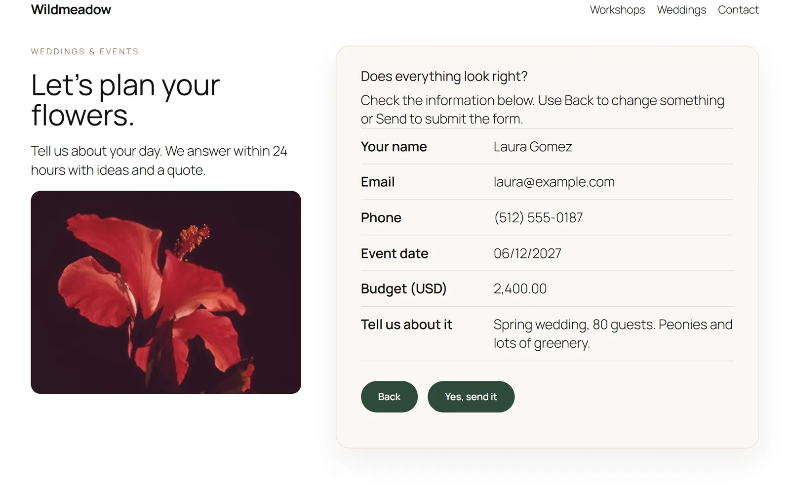
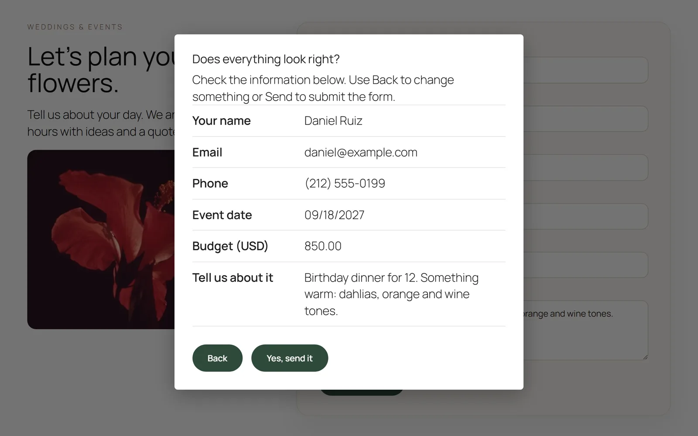
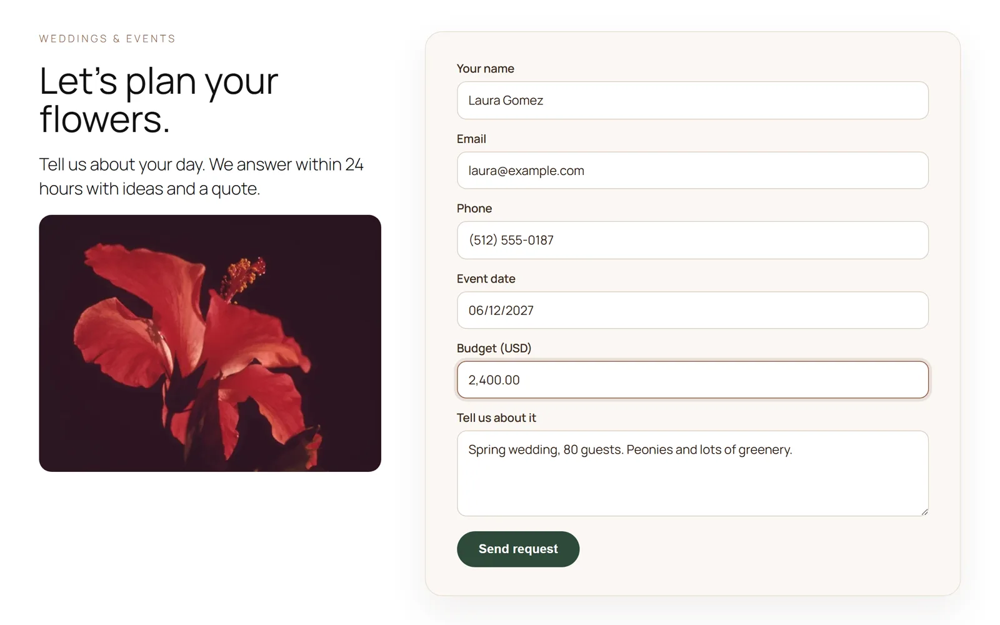
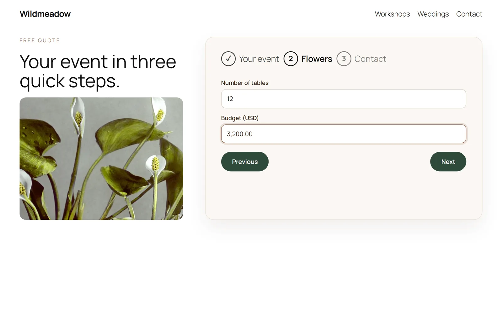

"Check your message before sending", for Contact Form 7.
HeroBytes Confirm & Masks adds the three things people keep asking Contact Form 7 for: a confirmation screen with a summary of everything typed, input masks for phones, documents, dates and money, and simple multi-step forms. No jQuery, no tracking.

Add a confirmation screen to a Contact Form 7 form
Fewer typos in phone numbers and emails, fewer "sorry, I meant..." follow-ups. Standard practice in Japan, useful everywhere.
- Install and activate the plugin (Contact Form 7 must be active).
- Edit the form in Contact > Contact Forms and open its new Confirm & Masks tab. Turn the confirmation screen on, choose in place of the form or as a pop-up, and edit the title and button labels if you want.
- Save. From now on, Send shows a summary first; the visitor can go Back to fix something or confirm.
To turn it on for every form at once, use Contact > Confirm & Masks. If you prefer the form's Additional Settings box, one line does it: confirm_screen: on.

<label> elements. Files, checkboxes, radio buttons, selects and acceptance boxes are summarised properly. Fields hidden by conditional-fields plugins are left out.Coming from "Contact Form 7 add confirm"? Templates built for that old plugin keep working: the [confirm] button opens the confirmation screen and [back] is ignored.
Phone and document masks in Contact Form 7
The field formats itself while the visitor types, the mobile keyboard switches to numeric, and incomplete values are rejected on the server too.
Add mask:NAME to any [text] or [tel] tag:
[tel* phone mask:phone-us]
[text* document mask:cpf]
[text birthday mask:date placeholder "DD/MM/YYYY"]
[text* budget mask:money]
[text plate mask:AAA-000]
[tel* mobile mask placeholder "+57 (000) 000-0000"]Presets: phone, digits, money, phone-us, phone-br, phone-co, phone-mx, phone-ar, phone-cl, phone-es, phone-pt, phone-uk, phone-de, phone-fr, phone-it, phone-jp, date, date-us, date-iso, time, year, cpf, cnpj, cpf-cnpj, cep, nit, rut, dni, nie, curp, rfc, zip, zip-us, postcode.
Your own pattern: 0 digit, 9 optional digit, A letter, S letter or digit, # any character; anything else is printed literally. Contact Form 7 does not allow spaces or brackets inside tag options, so for those write a bare mask and put the pattern in the placeholder, or define a named mask under Contact > Confirm & Masks. Dates and times are also checked to be real (no 31/02).

Coming from "Contact Form 7 - Phone mask field"? Its [mask* name "(___) ___-____" "Placeholder"] tag keeps working.
Multi-step forms
One form, one submission, no extra pages.
Write [step "Title"] where a new step begins:
[step "About you"]
<label> Your name [text* your-name] </label>
[step "Your message"]
<label> Message [textarea your-message] </label>
[submit "Send"]A progress list shows the steps. Next validates the current step with Contact Form 7's own rules. If the server rejects a field, the form jumps back to its step. The confirmation screen, if enabled, comes after the last step.

Questions
Does it work with the conditional fields plugin?
Yes. Fields hidden by conditional-fields plugins are left out of the summary. Add the class avoid-confirm to anything else you do not want shown.
Is it accessible?
Focus moves to the summary, the pop-up traps focus and closes with Escape, and everything works with the keyboard and screen readers.
Does it load scripts on every page?
No. Assets load only on pages that render a form using one of the features. No jQuery, no external requests.
For developers
Events on the form element: hvcm:confirmopen, hvcm:confirmback, hvcm:confirmsend, hvcm:stepchange. window.hvcm.init(form) for forms inserted after page load. Filters: hvcm_confirm_enabled, hvcm_frontend_config, hvcm_mask_presets, hvcm_incomplete_message, hvcm_always_enqueue.
Is anything locked behind a paid version?
No. Everything on this page is in the free plugin. This plugin is not affiliated with the developers of Contact Form 7.
Support
Write to sebas152000@gmail.com. A reported bug becomes a new version, usually within a week.